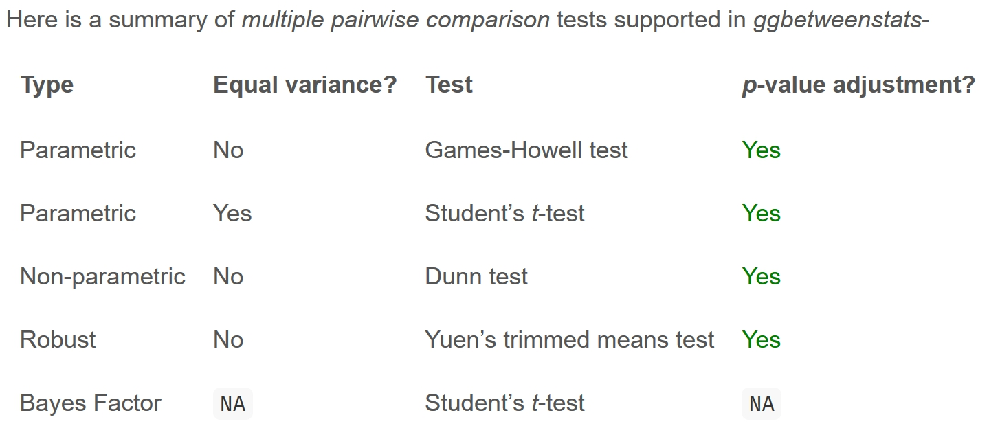
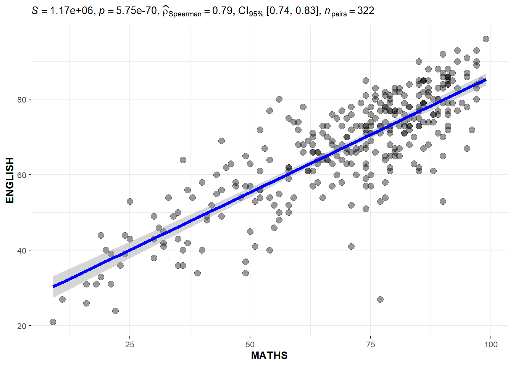

package 'nortest' successfully unpacked and MD5 sums checked
The downloaded binary packages are in
C:\Users\Legion\AppData\Local\Temp\Rtmp0So1cp\downloaded_packagesHands-On Exercise 4-B:
Visualising Statistical Analysis
1 Learning Outcome
In this hands-on exercise, you will gain hands-on experience on using:
- ggstatsplot package to create visual graphics with rich statistical information,
- performance package to visualise model diagnostics, and
- parameters package to visualise model parameters
2 Getting Started
Use the pacman package to check, install and launch the R packages ggstatplot and tidyverse.
ggstatsplot is an extension of ggplot2 package for creating graphics with details from statistical tests included in the information-rich plots themselves.
In this section, Exam_data.csv provided will be used. Using read_csv() of readr package, import Exam_data.csv into R.
The code chunk below read_csv() of readr package is used to import Exam_data.csv data file into R and save it as an tibble data frame called exam_data.
The data is a tibble dataframe and contains 322 observations across 7 attributes.
# A tibble: 5 × 7
ID CLASS GENDER RACE ENGLISH MATHS SCIENCE
<chr> <chr> <chr> <chr> <dbl> <dbl> <dbl>
1 Student321 3I Male Malay 21 9 15
2 Student305 3I Female Malay 24 22 16
3 Student289 3H Male Chinese 26 16 16
4 Student227 3F Male Chinese 27 77 31
5 Student318 3I Male Malay 27 11 25Rows: 322
Columns: 7
$ ID <chr> "Student321", "Student305", "Student289", "Student227", "Stude…
$ CLASS <chr> "3I", "3I", "3H", "3F", "3I", "3I", "3I", "3I", "3I", "3H", "3…
$ GENDER <chr> "Male", "Female", "Male", "Male", "Male", "Female", "Male", "M…
$ RACE <chr> "Malay", "Malay", "Chinese", "Chinese", "Malay", "Malay", "Chi…
$ ENGLISH <dbl> 21, 24, 26, 27, 27, 31, 31, 31, 33, 34, 34, 36, 36, 36, 37, 38…
$ MATHS <dbl> 9, 22, 16, 77, 11, 16, 21, 18, 19, 49, 39, 35, 23, 36, 49, 30,…
$ SCIENCE <dbl> 15, 16, 16, 31, 25, 16, 25, 27, 15, 37, 42, 22, 32, 36, 35, 45… ID CLASS GENDER RACE
Length:322 Length:322 Length:322 Length:322
Class :character Class :character Class :character Class :character
Mode :character Mode :character Mode :character Mode :character
ENGLISH MATHS SCIENCE
Min. :21.00 Min. : 9.00 Min. :15.00
1st Qu.:59.00 1st Qu.:58.00 1st Qu.:49.25
Median :70.00 Median :74.00 Median :65.00
Mean :67.18 Mean :69.33 Mean :61.16
3rd Qu.:78.00 3rd Qu.:85.00 3rd Qu.:74.75
Max. :96.00 Max. :99.00 Max. :96.00 3 TESTS
3.1 One-sample test: gghistostats() method
In the code chunk below, gghistostats() is used to to build an visual of one-sample test on English scores.
A one-sample test is a statistical hypothesis test used to determine whether the mean of a single sample of data differs significantly from a known or hypothesized value.
It is a statistical test that compares the mean of a sample to a specified value, such as a population mean, to see if there is enough evidence to reject the null hypothesis that the sample comes from a population with the specified mean.
H0: EL average score is 60.

3.1.1 Bayes Factor
A Bayes factor is the ratio of the likelihood of one particular hypothesis to the likelihood of another. It can be interpreted as a measure of the strength of evidence in favor of one theory among two competing theories.
That’s because the Bayes factor gives us a way to evaluate the data in favor of a null hypothesis, and to use external information to do so. It tells us what the weight of the evidence is in favor of a given hypothesis.
When we are comparing two hypotheses, H1 (the alternate hypothesis) and H0 (the null hypothesis), the Bayes Factor is often written as B10.
The Schwarz criterion is one of the easiest ways to calculate rough approximation of the Bayes Factor.
How to interpret Bayes Factor
A Bayes Factor can be any positive number. One of the most common interpretations is this one—first proposed by Harold Jeffereys (1961) and slightly modified by Lee and Wagenmakers in 2013:

3.2 Two-sample mean test: ggbetweenstats()
In the code chunk below, ggbetweenstats() is used to build a visual for two-sample mean test of Maths scores by gender (independent).
H0: Mean of F and M Math scores are the same.
H1: Mean of F and M Math scores are not the same.

Since p-value > 0.05, we do not have enough statistical evidence to reject the null hypothesis that mean of Math scores of both gender are the same.
However, if we check for normality of Math scores of each gender.
Female Male
1.603536e-07 6.268520e-08 The by() function is used to apply a function to subsets of a data frame or vector split by one or more factors. In the above code, we use by() to split the math_score column by gender, and apply the shapiro.test() function to each group.
H0: Math scores by gender follows normal distribution.
H1: Math scores by gender do not follow normal distribution.
From the Shapiro-Wilk test results, we have enough statistical evidence to reject the null hypothesis and conclude that the Math scores by gender does not follow a normal distribution. Thus the use of ‘np’ is appropriate.
3.3 One-way ANOVA Test: ggbetweenstats() method
In the code chunk below, ggbetweenstats() is used to build a visual for One-way ANOVA test on English score by race (Independent 4 sample mean).

“ns” → only non-significant
“s” → only significant
“all” → everything
3.3.1 ggbetweenstats - Summary of tests
Type argument entered by us will determine the centrality tendency measure displayed
mean for parametric statistics
median for non-parametric statistics
trimmed mean for robust statistics
MAP estimator for Bayesian statistics



3.4 Significant Test of Correlation: ggscatterstats()
Earlier, we have checked that EL scores do not follow a normal distribution. Now we will do the same for Math scores.
Since the p-value < 0.05, we have enough statistical evidence to reject the null hypothesis and conclude that the Math scores also do not follow normal distribution.
In the code chunk below, ggscatterstats() is used to build a visual for Significant Test of Correlation between Maths scores and English scores.

The plot above uses type = “non-parametric” as both Math and EL scores do not follow normal distribution.
3.5 Significant Test of Association (Dependence) : ggbarstats() methods
In the code chunk below, the Maths scores is binned into a 4-class variable by using cut().
We will create a new dataframe exam1 similar to exam df but with extra column called ‘MATHS_bins’.
In this code chunk below ggbarstats() is used to build a visual for Significant Test of Association (2 categorical variables).
H0: There is no association between math_bin and gender.
H1: There is an association between math_bin and gender.
From the results above , p-value > 0.05 thus we have not enough statistical evidence to reject the null hypothesis that there is not association between the math_bin and gender variables.